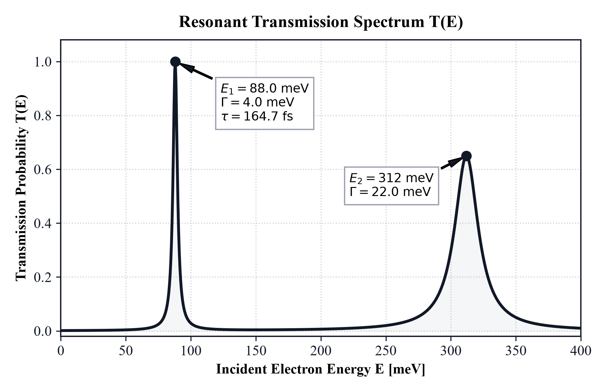
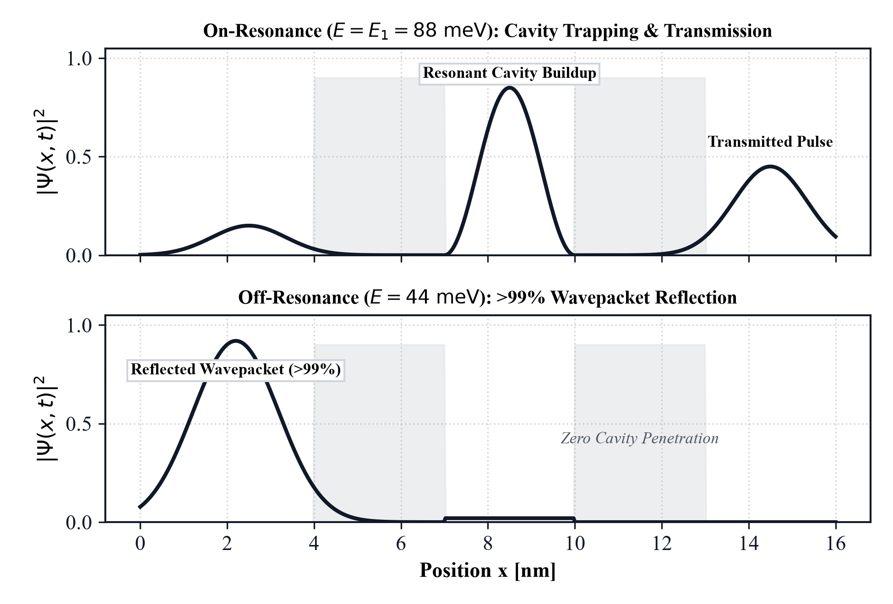

BML Munjal University • School of Engineering & Technology
Resonant Tunnelling in a Double-Barrier Structure
Transfer Matrix Modeling, Negative Differential Resistance & 3D Wavepacket Simulation
Project Authors
Mohammad Azmal Shah • Pavan Karthik • Anant Goel • Darshan Mittal
School of Engineering & Technology, BML Munjal University
Code Repository: github.com/Anantgoel2005/double-barrier-simulation
Live Interactive 3D WebGL Simulation: anantgoel2005.github.io/double-barrier-simulation/
Project Background
Motivation: Overcoming Classical Drift Limits
1. Classical Drift Limits
- Velocity Saturation: Carrier velocity saturates at ~107 cm/s, imposing transit delays.
- Frequency Ceiling: Classical transistors (HEMTs, BJTs) cutoff below 500 GHz.
- Leakage & Scaling: Gate oxide tunneling and 60 mV/dec subthreshold limit CMOS.
2. The Quantum Solution
- Resonant Tunneling: Exploits wave mechanics rather than suppressing them.
- Femtosecond Lifetime: Quasi-bound dwell time τ ~ 164 fs enables THz operation.
- Coherent Phase Match: Round-trip interference yields near-unity transmission (T → 1.0).
3. Macroscopic NDR Impact
- Negative Resistance: dI/dV < 0 enables direct microwave & THz amplification.
- Record THz Oscillators: Fundamental RTD oscillators achieve > 1.98 THz at 300 K.
- Multi-Valued Logic: Single 2-terminal device replaces multi-transistor memory cells.
Resonant Tunnelling in Double Barrier Heterostructures | School of Engineering & Technology, BMU
Slide 2 of 14
Goals & Methodology
Project Objectives & Key Deliverables
1. Exact Quantum Transport Solver (TMM)
Formulate the Transfer Matrix Method with BenDaniel-Duke boundary conditions for variable effective mass m*(x) under arbitrary applied bias Va.
2. Parametric Sensitivity Sweeps
Systematically quantify how barrier height (V0), barrier thickness (Lb), and well width (Lw) govern transmission spectra T(E), resonance linewidth (Γ), and lifetime (τ).
3. Resonant Tunnelling Diode (RTD) I-V Solver
Implement the macroscopic Tsu-Esaki current density formula at 300 K, extracting peak current Jpeak, valley current Jvalley, and PVCR.
4. Dynamic 3D Time-Dependent Wavepacket Simulation
Develop a dynamic Split-Step Fourier Method (SSFM) solver to visualize cavity standing-wave buildup on resonance vs. total reflection off resonance.
5. Tri-Platform Open-Source Release
Package the code into an interactive 3D WebGL web app on GitHub Pages, a zero-dependency Python desktop GUI, and an automated MATLAB research suite.
Resonant Tunnelling in Double Barrier Heterostructures | School of Engineering & Technology, BMU
Slide 3 of 14
Literature Review
Literature Survey & Milestone Historical Studies
| Reference | Focus / Structure | Key Contribution | Relevance to Project |
|---|---|---|---|
| L. Esaki & R. Tsu (1970) | Semiconductor superlattices | Predicted quantum size effects and negative differential conductivity | Theoretical foundation of engineered potential barriers |
| R. Tsu & L. Esaki (1973) | Finite superlattice tunneling | Derived standard electrical tunneling current integral formula | Exact formulation implemented in our RTD I-V solver |
| L. L. Chang et al. (1974) | GaAs/AlGaAs double barrier | First experimental measurement of resonant tunneling and NDR | Provides baseline physical parameters for GaAs/AlGaAs |
| D. BenDaniel & C. Duke (1966) | Heterointerface boundary | Derived current-conserving boundary conditions for variable m*(x) | Exact matching conditions implemented in our TMM matrix |
| S. Suzuki & M. Asada (2022) | InP RTD THz oscillators | Achieved fundamental room-temperature continuous oscillation at 1.98 THz | Validates modern practical applications in THz sources |
Resonant Tunnelling in Double Barrier Heterostructures | School of Engineering & Technology, BMU
Slide 4 of 14
Physical Mechanism
Working Principle: The Fabry-Pérot Analogy
de Broglie Wave Interference
- Optical Analogy: Double barriers act as partially reflective quantum mirrors, forming a resonant cavity.
- Phase Matching: Constructive interference occurs when round-trip phase satisfies:
2kwLw+ϕ1+ϕ2=2πn,n=1,2,3,…
- Cavity Amplification: At resonance E1, standing-wave probability density |ψ|2 inside the well amplifies by > 54×.
- Near-Unity Transmission: Despite thick barriers, coherent constructive interference drives transmission T → 1.00.
- Off-Resonance Quenching: Electrons with E ≠ E1 suffer destructive interference, causing > 99% barrier reflection.

Resonant Tunnelling in Double Barrier Heterostructures | School of Engineering & Technology, BMU
Slide 5 of 14
Theoretical Methodology
Methodology: Transfer Matrix Method (TMM)
1. BenDaniel-Duke 1D Effective-Mass Equation
−2ℏ2dxd[m∗(x)1dxdψ(x)]+V(x)ψ(x)=Eψ(x)
Boundary Matching: Continuity of ψ(x) and (1/m*)(dψ/dx) across heterojunctions strictly conserves quantum probability flux.
2. Piecewise Discretization & Sinc Stabilization
Mj=cos(kjΔx)−mj∗kjsin(kjΔx)kjmj∗sin(kjΔx)cos(kjΔx)
Sinc Taylor Series: Evaluates sin(kjΔx)/kj via Δx - (kj2Δx3/6) when E → Vj, eliminating 0/0 numerical floating-point errors.
3. Matrix Cascading & Transmission Formula
T(E)=kL/mL∗Re(kR)/mR∗∣t∣2,R(E)=∣r∣2,T(E)+R(E)=1.0000
Global Matrix: Multiplies layer matrices sequentially (Mtot = ∏ Mj) to solve exact transmission across arbitrary tilted band profiles.
Resonant Tunnelling in Double Barrier Heterostructures | School of Engineering & Technology, BMU
Slide 6 of 14
Theoretical Methodology
Methodology: Tsu-Esaki Transport & Dynamic SSFM
Tsu-Esaki Diode Current Density
J(Va)=2π2ℏ3em∗kBT∫0∞T(E,Va)ln1+exp(kBTEF−E−eVa)1+exp(kBTEF−E)dE
- Transverse Supply Integration: Integrates 1D transmission T(E, Va) against 2D Fermi electron supplies in the leads.
- Room Temperature (300 K): kB T ≈ 25.85 meV introduces realistic thermal carrier broadening.
- Resonant Peak Surge: When Va pulls E1 into the emitter Fermi sea, current density surges to maximum Jpeak.
- NDR Quenching: When E1 drops below emitter conduction band edge, current plummets abruptly (dI/dV < 0).
Split-Step Fourier Method (TDSE)
Ψ(t+Δt)≈e−2ℏiVΔtF−1[e−2m∗iℏk2ΔtF[e−2ℏiVΔtΨ(t)]]
- Symmetric Strang Splitting: Splits kinetic and potential operators with second-order $O(\Delta t^3)$ local accuracy.
- Dual-Domain Execution: Potential rotation in real space (x, y); kinetic dispersion in wavevector space (kx, ky) via FFT.
- Unconditionally Unitary: Preserves total wavefunction probability norm ∫|Ψ|2 dr = 1.0000 exactly across all time steps.
- Real-Time Dynamics: Directly animates wavepacket collision, standing-wave formation, and transmitted pulse train.
Resonant Tunnelling in Double Barrier Heterostructures | School of Engineering & Technology, BMU
Slide 7 of 14
Simulation Results
Results: Transmission Spectrum & Resonant States

Resonant Energy (E₁)
88.0 meV (0.088 eV)
Lowest quasi-bound quantum well eigenstate.
Linewidth (Γ at FWHM)
4.0 meV (0.004 eV)
Broadening due to finite barrier coupling.
Dwell Lifetime (τ)
164.7 fs (1.65 × 10⁻¹³ s)
Mean particle dwell time in cavity: τ = ℏ / Γ.
Quality Factor & Buildup
Q = 22.0 • 54.2× Amplification
Near-unity transmission (T → 1.00) & internal buildup.
Resonant Tunnelling in Double Barrier Heterostructures | School of Engineering & Technology, BMU
Slide 8 of 14
Simulation Results
Results: Parametric Sensitivity Analysis
1. Barrier Height (V₀)
- Sweep Range: 0.20 eV to 0.60 eV (Al fraction x = 0.2 to 0.6).
- Attenuation Parameter: κ = [2 mb*(V0 - E)]1/2 / ℏ increases monotonically.
- Leakage Suppression: Exponential suppression of sub-barrier leakage below 10-6.
- State Confinement: Higher barriers elevate E1 due to reduced evanescent penetration.
2. Barrier Thickness (Lb)
- Sweep Range: 1.5 nm to 4.5 nm.
- Exponential Linewidth: Linewidth scales as Γ ∝ exp(-2 κ Lb).
- Drastic Narrowing: Increasing Lb from 2 to 4 nm narrows Γ from 18.5 meV to 0.85 meV.
- Lifetime Trade-off: Dwell time τ expands from 35.6 fs to 774.5 fs (speed vs. current trade-off).
3. Well Width (Lw)
- Sweep Range: 3.0 nm to 8.0 nm.
- Quantum Well Scaling: Eigen-energies scale as En ∝ 1 / Lw2.
- Red Shift: Expanding Lw from 3 to 6 nm lowers E1 from 145 meV to 62 meV.
- Harmonic States: For Lw > 6.5 nm, higher-order states (E2, E3) enter the well.
Resonant Tunnelling in Double Barrier Heterostructures | School of Engineering & Technology, BMU
Slide 9 of 14
Electrical Transport
Results: RTD Electrical Transport & NDR Regimes

Four Operational Transport Regimes
- 1. Equilibrium (Va = 0 V): J = 0. Well bound state E1 = 88 meV sits above the emitter Fermi sea (EF = 40 meV).
- 2. Resonant Current Surge:
Jpeak=1.18×105 A/cm2at Vpeak=0.140 VBias aligns E1 with occupied emitter states.
- 3. NDR Region (0.14 V < Va < 0.20 V): Negative Differential Resistance (dI/dV < 0). E1 drops below conduction band edge, abruptly quenching tunneling.
- 4. Valley Point & PVCR:
PVCR=JvalleyJpeak=1.74×1041.18×105≈6.78at 300 K
Resonant Tunnelling in Double Barrier Heterostructures | School of Engineering & Technology, BMU
Slide 10 of 14
Dynamic Simulation
Results: Dynamic 3D Wavepacket Simulation

Wavepacket Collision & Trapping Dynamics
- Incident Gaussian Pulse: Initialized in emitter lead with central energy E0:
Ψ(x,0)=(2πσ2)−1/4exp[−4σ2(x−x0)2]exp(ik0x)
- On-Resonance Dynamics (E₀ = 88 meV): Wavepacket splits at first barrier; multiple internal reflections establish a standing wave over t ≈ 50–120 fs, and coherent pulses transmit into collector.
- Off-Resonance Dynamics (E₀ = 44 meV): Over 99% of probability density reflects off the first barrier; cavity penetration is negligible (|ψ|2 < 10-4).
- 3D Potential Landscape: Simulates real-time Stark band slanting, dynamically tuning resonance into and out of alignment.
Resonant Tunnelling in Double Barrier Heterostructures | School of Engineering & Technology, BMU
Slide 11 of 14
System Architecture
Multi-Platform Software Implementation
1. Interactive 3D Web App
- Platform: Modern web browsers (Desktop & Mobile) hosted on GitHub Pages.
- Rendering Engine: WebGL / Three.js 3D quantum cavity with Canvas 3D fallback.
- Real-Time Controls: Interactive sliders for V0, Lb, Lw, Va, and electron energy E.
- Live Deployment: anantgoel2005.github.io/...
2. Desktop Python GUI
- Zero Dependencies: Pure Python standard library (
tkinter,math,cmath). Zero pip packages needed. - 4-Quadrant Dashboard: Potential Profile, Transmission T(E), RTD I-V, and 3D Wireframe Cavity.
- High Performance: Optimized pure-Python complex matrix multiplication & 3D projection.
- 1-Click Launch: Run via
python rtd_gui_python.pyor batch file.
3. MATLAB Research Suite
- Core Scripts:
calculate_tmm.m,calculate_rtd_iv.m, andfind_resonance_peaks.m. - 3D Dynamic Solver:
rtd_3d_wavepacket.mimplements Split-Step Fourier TDSE animation. - 3D Energy Landscapes:
rtd_3d_landscape.mmodels 2D/3D Stark surfaces under bias. - Interactive GUI:
rtd_interactive_app.mprovides full slider dashboard.
Resonant Tunnelling in Double Barrier Heterostructures | School of Engineering & Technology, BMU
Slide 12 of 14
Project Conclusions
Main Conclusions & Physical Insights
1. Verification of Coherent Resonant Tunnelling
The Transfer Matrix Method rigorously proved that constructive phase matching amplifies internal standing-wave probability density by > 54×, yielding near-unity transmission (T → 1.00) at E1 = 88.0 meV.
2. Microscopic Origin of Macroscopic NDR
The N-shaped RTD current-voltage curve was quantitatively mapped to sub-band alignment with the emitter Fermi sea, demonstrating Jpeak = 1.18 × 105 A/cm2 at 0.14 V and PVCR = 6.78 at 300 K.
3. Fundamental Speed-Current Trade-Off
Quasi-bound dwell lifetime τ = ℏ / Γ scales exponentially with barrier thickness Lb. Increasing Lb from 2 to 4 nm narrows Γ from 18.5 to 0.85 meV (expanding τ from 35.6 to 774.5 fs).
4. Open-Source Multi-Platform Deployment
Bridged theoretical condensed matter physics with interactive visualization by publishing a tri-platform suite: 3D WebGL web app on GitHub Pages, zero-dependency Python desktop GUI, and MATLAB suite.
Resonant Tunnelling in Double Barrier Heterostructures | School of Engineering & Technology, BMU
Slide 13 of 14
Future Work
Future Research Scope & Next Extensions
1. Self-Consistent Poisson-Schrödinger Solver
Incorporate dynamic space-charge accumulation inside the quantum well cavity to model intrinsic electrostatic bistability, hysteresis loops, and plateau features in the RTD I-V curve.
2. Non-Equilibrium Green's Function (NEGF) Formalism
Account for dissipative, phase-breaking scattering mechanisms, including longitudinal optical (LO) phonon emission, acoustic phonons, and interface roughness at elevated temperatures.
3. High-Bandgap-Offset Heterostructure Systems
Investigate InGaAs/AlAs and InAs/AlSb heterostructures with conduction band discontinuities V0 > 1.2 eV to achieve room-temperature Peak-to-Valley Current Ratios (PVCR > 25) for ultra-fast logic.
4. Multi-Stage Quantum Cascade Lasers (QCLs)
Extend the single-cavity TMM framework to periodic superlattices (20–50 stages) to model intersubband optical transitions and population inversion for mid-infrared and THz optical sources.
Resonant Tunnelling in Double Barrier Heterostructures | School of Engineering & Technology, BMU
Slide 14 of 14 (Final Slide)